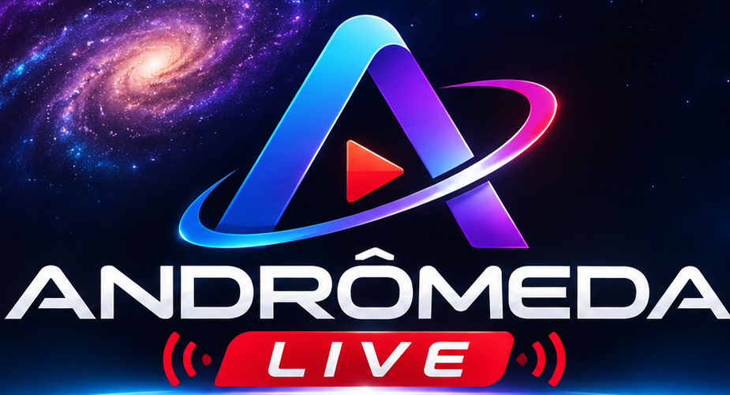
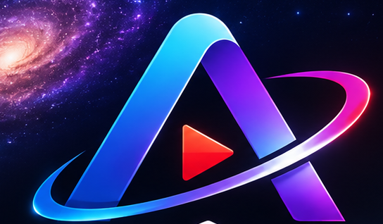
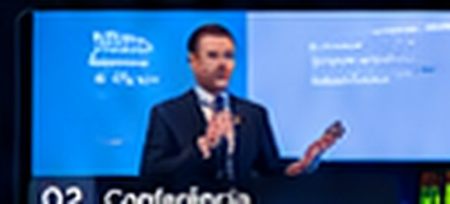
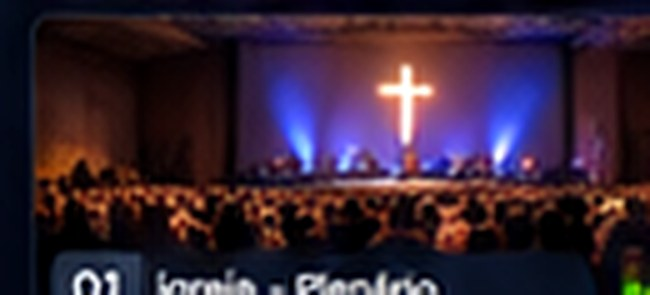

Mesa de corte na nuvem
Preview à esquerda, No Ar à direita, corte, transições e operação centralizada pelo navegador.
Imagine comandar câmeras, cortes, áudio e transmissões de diferentes lugares em uma única mesa profissional na nuvem. Conheça o futuro do Andrômeda Live.


Um fluxo de trabalho pensado para quem precisa transmitir com mais controle e menos dependência de estruturas físicas complexas.
Preview à esquerda, No Ar à direita, corte, transições e operação centralizada pelo navegador.
Arquitetura projetada para canais com entradas de celulares, webcams e fontes de vídeo compatíveis.
Fluxo previsto de convite por HTTPS para conectar o celular em Wi-Fi, 4G ou 5G, sem depender da mesma rede local.
Integração híbrida planejada para aproveitar câmeras externas e aplicativos de captura profissionais.
Monitoramento por fonte, indicadores VU e seleção independente do áudio usado na transmissão.
Legendas, logotipos, créditos e composição de imagens em layouts configuráveis.
Comunicação com operadores de câmera e indicação visual de qual fonte está no ar: recursos previstos para o Andrômeda Cam.
Corte direto, transições e controle do tipo manche para operação ao vivo com precisão.
Saídas planejadas para YouTube, Facebook, Instagram e outros destinos compatíveis com RTMP/RTMPS.
Experimente o fluxo de uma produção ao vivo. Clique em uma das dez câmeras para preparar a fonte no Preview e use CUT, AUTO ou o T-Bar para enviá-la ao No Ar. As imagens são ilustrativas; não há transmissão de vídeo nesta demonstração.


Protótipo navegável para demonstrar a experiência de direção. Imagens e medições são simuladas; compatibilidade e operação real dependerão de testes da plataforma.
Distribua convites por link e integre as câmeras compatíveis à operação, independentemente de estarem na mesma rede.
Organize as fontes, prepare a próxima imagem no Preview, gerencie áudio, GC e transições.
Envie o sinal Program para os destinos configurados, com foco em uma operação centralizada.
Da produção independente à cobertura institucional, a proposta é tornar fluxos profissionais de transmissão mais acessíveis.
Valores e limites estudados para o lançamento. Ainda não são uma oferta ativa nem garantem contratação imediata.
Para transmissões simples e produções individuais.
Para produtoras, eventos e transmissões recorrentes.
Para equipes que precisam de mais fontes e tempo de operação.
*Preços, capacidades, recursos, regras de excedentes e disponibilidade são estimativas de planejamento sujeitas a alteração. Nenhum pagamento é solicitado nesta página.
Não. Existe um protótipo/simulador, mas o produto SaaS completo ainda está em desenvolvimento. Esta página apresenta o projeto e permite preparar uma solicitação de interesse.
A proposta da plataforma é operar a mesa pelo navegador. Determinadas fontes externas podem exigir aplicativos específicos, como o Blackmagic Camera, ou configurações de rede e codificação.
Sim, esse é um dos objetivos centrais do projeto: conexões por link HTTPS com sinalização WebRTC e infraestrutura de mídia adequada. A experiência definitiva depende de testes de estabilidade, latência e compatibilidade.
O suporte a Blackmagic Camera usando protocolos compatíveis é parte da arquitetura híbrida prevista. Compatibilidade por dispositivo, codec e configuração ainda precisará de validação.
A distribuição para múltiplos destinos RTMP/RTMPS está prevista. Cada plataforma possui requisitos e permissões específicos; simultaneidade e limites dependerão da infraestrutura e do plano.
Não. Os valores são hipóteses comerciais previamente estudadas e serão confirmados somente quando os custos reais da infraestrutura, os testes e as condições contratuais estiverem definidos.
Conte como pretende usar a plataforma e registre uma solicitação de interesse para a próxima etapa comercial.
✓ Sem pagamento ou compromisso de compra nesta etapa.
✓ Você escolhe o plano de maior interesse.
✓ A solicitação é gerada para envio por seu próprio canal; este site não armazena seus dados nem envia cadastros automaticamente.
Preencha os dados para gerar sua mensagem comercial.